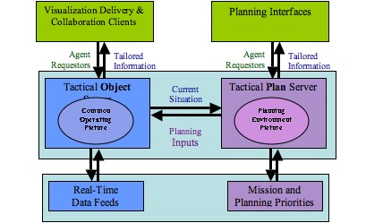

|
|
Planning The outcome of combat has always been determined at least as much by the decisions made as by the action on the battlefield. Historically, victory belongs to the forces that understand the situation they face, the options they have, and that can make the right call at the right time. From the decision to fight or avoid conflict through the decisions that define the planning and execution of combat, making the right decisions is the key to mission success and the preservation of our forces. There is an unlimited set of Aiding, Suggesting, Supporting, Planning, Collaborating and Analyzing functions that a Tactical Decision Aid (TDA) could potentially perform, whether in support of force on force or urban missions. As enemies, weapons, tactics, and technology advance, these functions will continue to change. The highest challenge is to create a warrior-centric architecture that anticipates the integration of new features. The ArtisTech team has the background, expertise, and advanced software to instantiate an architecture that allows us to concentrate on delivering a useful set of the latest research capability in decision aids. Experience
After many years working on symbolic artificial intelligence systems, and entity-based simulation (e.g. Distributed Interactive Simulation and HLA simulations), ArtisTech invented a method for Planning in a Numeric Threat Space. Further information about this technology can be found under Planneal, Co-Evolutionary planning with constraint engine For many years, the Army Research Lab (ARL) has been researching the application of Genetic Algorithms (GAs) to planning applications. The current research involves the exploration of applying Co-Evolution to analyze multi-sided, non-linear military operations. The extension of planning research to multi-sided operations has extended the requirements on plan assessment beyond those of standard wargames. ArtisTech developed a complimentary Constraint Satisfaction approach for the GA planners. The Constraint Satisfaction approach met some key needs of the assessor for the GA planner.

|
Related Pages
|
Copyright © 2006 - 2015 Aristech, Inc., all rights reserved